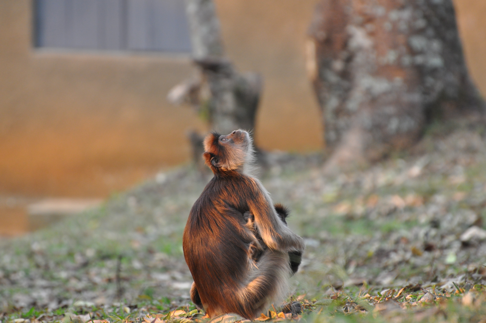

I started writing my blog, Monkey’s Uncle, back in 2008. My wife had major surgery and I was a bit distracted from the task of academic writing. I thought that having a blog might allow me to keep writing in a mode that would require less concentration. Somewhat to my surprise, it worked pretty well.
As I wrote more, a funny thing happened. People actually read my posts and sometimes this led to collaborations. One of my most productive collaborations came about because Marcel Salathé chanced upon my blog. We went on to write what would be several of the most-cited papers (for example: here here and here) either of us would write (so far, at least).
In the last few years, I’ve essentially stopped blogging. Stanford and WordPress never completely got along and it was always a bit of a hassle to maintain. The folder that held the images for blog posts somehow disappeared and now the posts that were supposed to have embedded images just have blind links in them. For a while, Twitter effectively took the place of the blog. Putting together threads describing my work was fun, but with Twitter’s effective demise as a reasonable tool for scientific communication, I’ve found myself wanting to get back into actual blogging. The seed for re-starting my blog was actually planted by John Quiggin’s lament (in a comment on my extra-long Twitter thread) that people don’t blog anymore. I have also been inspired by my interactions with Henry Farrell, who both blogs on his personal site and is a regular contributor to Crooked Timber.
Quarto has opened up new opportunities for blogging. I already use it for my course notes and my lab manual, so it seemed natural to give it a try for blogging as well. Quarto has the tremendous benefit of supporting technical writing, embedding code, rendering equations, etc. This sounds promising: my previous blog posts had less of this material than I wanted because of technical limitations of the site.
There will be a learning curve here, no doubt. The aesthetics are a bit spare so far. Hopefully, I can figure out how to make a nice header, maybe even with my favorite monkey picture.

My goal is to keep my posts a bit shorter than during peak Monkey’s Uncle. I mean, seriously, who really wants to read a 7000-word, slightly emo essay on the sad state of contemporary anthropology?
I don’t use Twitter anymore, but you can find me on Blueksy. I also have a Mastodon account. So far, at least, these are a far cry from peak Academic Twitter, but they have promise. Fewer right-wing trolls and Russian bots, so they’ve got that going for them.